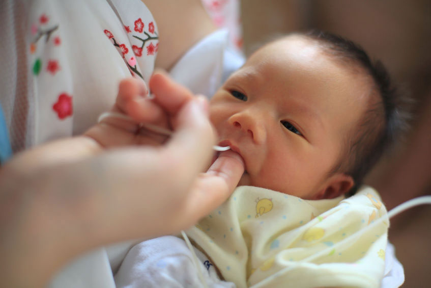
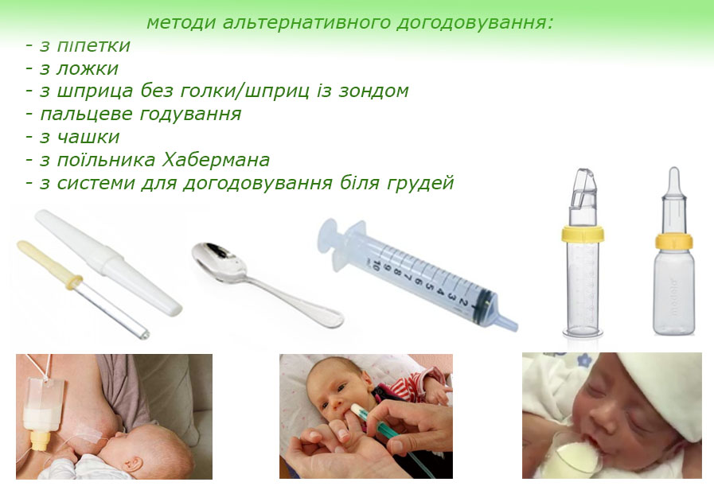

Альтернативне догодовування

Автор: Тетяна Криницька-Яремків
Грудне вигодовування – це природний процес вигодовування дитини, в якому грудне молоко - єдине повноцінне природне харчування для немовлят. Не менш важливо й те, що грудне вигодовування сприяє виникненню тісного психологічного зв'язку між матір'ю та дитиною, який може створити тільки мама. Природою закладено, що діти з народження до періоду ознайомлення з дорослою їжею харчуються лише грудним молоком, яке містить усі необхідні поживні речовини для росту і розвитку малюка.
На жаль, трапляються ситуації, коли щось пішло не так, жінки зіштовхуються з труднощами. Серед них можна відзначити найбільш поширені: нестача молока, розділення матері з дитиною, відмови від грудей, деякі захворювання у матері або в дитини. У таких випадках потрібно забезпечити дитину достатнім харчуванням.

Найпоширенішим і найшкідливішим для успішного грудного вигодовування є догодовування з пляшки. Після використання пляшки дитина може відмовитися смоктати материнські груди.
Це відбувається тому, що дитина смокче з пляшки зовсім не так, як з грудей. Коли дитина їсть з пляшки, то працюють лише м’язи щік, вона робить втягуючі рухи і отримує неперервний потік рідини. При смоктанні з пляшки не потрібно широко відкривати рот, при цьому дитина смокче саму соску, нижня щелепа напружена. А при смоктанні грудей немовля смокче не сосок, а захоплює ареолу (навколососковий кружечок) максимально глибоко, широко відкривши ротик, молоко добувається хвилеподібними рухами язичка. Сосок не бере участь в смоктанні, він знаходиться на рівні м’якого піднебіння. При смоктанні грудей задіяні всі групи м’язів лиця. Тому після смоктання з пляшки в дитини відбувається плутанина сосків, дитина починає смоктати молоко з грудей, як з пляшки.
На малюнку 1,3 зображено, як дитина смокче груди – правильне захоплення.
На малюнку 2,4 зображений неправильне захоплення після смоктання з пляшки.

Отже, після смоктання з пляшки дитина неправильно прикладається до грудей, не відкриває широко ротик, не захоплює ареолу, а смокче ніби за сосок, внаслідок цього смоктання стає неефективним.
З пляшки дитині легше добувати молоко тому, що воно тече завжди з однаковим темпом. З грудей молоко може йти по-різному: може йти повільно, потім дуже швидко; може йти, а потім перестати (тому дитині для того, щоб добути молоко, потрібно чекати на нового приливу, тобто смоктати грудь «вхолосту».)
Інколи навіть одноразове догодовування з пляшки може призвести до того, що дитина поступово буде переведена на штучне вигодовування. Це відбувається таким чином: немовля неправильно прикладається, груди погано спорожнюються, починає вироблятися менше молока, мама збільшує докорм сумішшю. І так виникає замкнуте коло.
Багато виробників аксесуарів для годування дитини повідомляють, що вони виготовляють такі пляшки з сосками, при годуванні з яких у дитини не зіпсується захоплення грудей і це не призведе до відмови. Але! Жодна пляшка з соскою не зможе імітувати материнські груди, такої пляшки не існує і вона не може бути виготовлена.

Отже, як ми можемо догодувати дитину, якщо не з пляшки?
Існує декілька методів альтернативного догодовування:
- з піпетки
- з ложки
- з шприца без голки/шприц із зондом
- пальцеве годування
- з чашки
- з поїльника Хабермана
- з системи для догодовування біля грудей.

Піпетка. Догодовування з піпетки використовується рідко, через тривалість процесу. Підходить для молозива.

Ложка – це доступний простий спосіб догодовування. Вона не задовольняє потребу в смоктанні, тому після використання ложки дитина не відмовляється від грудей. Цей метод можна використовувати з перших днів життя у випадках коли дитина ослаблена після важких пологів, не має сили смоктати. Цей спосіб зручний тим, що його можна використовувати вже на етапі молозива. Молозиво зціджується одразу в ложку, щоб не розмазувати по стінках різних посудин і дається дитині. Давати догодовування потрібно під язичок або за щічку.
Для цього підійде будь яка чайна або десертна ложка. Дитину кладемо під кутом 30 градусів на згині ліктя мами. Набираємо приблизно чверть об’єму ложки і торкаємось ложкою до нижньої губи дитини. Коли відкриється ротик, вводимо ложку і кладемо на середину язичка, перевертаємо ложку, щоб молоко вилилось за щічку і чекаємо ковтального руху. Потім даємо наступну порцію.
Недоліки догодовування ложкою: проливання молока, великі витрати часу, для засвоєння цього методу потрібно потренуватись і здобути навики.

Існує «м’яка ложка» виробництва «Медела», виготовлена з м’якого силікону, яка містить спеціальний клапан, що дозволяє легко дозувати подачу молока. Годування з м’якої ложки зручніше тим, що вам не потрібно кожного разу черпати нову порцію, достатньо просто натиснути на клапан і вийде нова порція рідини.

Шприц без голки. Цей метод часто використовується в пологових для догодовування молозивом. Для того, щоб не розмазувати дорогоцінні краплі молозива по стінках посудини, молозиво можна зціджувати одразу в шприц. Для цього потрібно кінчик маленького шприца (краще №2) піднести до соска. Зціджуємо молозиво і ті краплі, що виділяються, збираємо в шприц. Для цього тягнемо поршень і завдяки вакууму краплі молозива потрапляють в шприц. Цим молозивом догодовуємо дитину. Якщо догодовуємо молоком, то беремо більший шприц, це може бути №5,10,20. Молоко зціджуємо в посудину і звідти набираємо в шприц.
При використанні шприца рідину по трішки впорскуємо в кутик рота. Можна шприц з’єднати із зондом (катетер для годування):

Для цього використовуються зонди для годування недоношених немовлят. Чим тонший катетер, тим краще (FR 5). Один кінець катетера має спеціальне розширення, яке з’єднується з кінчиком шприца, другий кінець - вводимо в кутик ротика при годуванні груддю або пальцевому годуванні (див нижче).

Пальцеве годування. Переважно догодовування зі шприца використовують разом із пальцевим годуванням. Як це робиться? Беремо дитину на руки, даємо посмоктати свій палень подушечкою догори. Руки мають бути ретельно вимиті, обстрижені нігті. Кінчик шприца розташовуємо вздовж пальця і так вводимо в ротик. Легенько натискаємо на поршень і подаємо рідину. Дитина робитиме смоктальні рухи, а потім ковтальні.
Перевагами методу догодовування ”палець + шприц із зондом” є те, що його просто і зручно використовувати, менше рідини розливається. Підходить в тому випадку, коли дитина не вміє координувати рухи смоктання-ковтання і викладати язичок на нижню губу. Під час цього догодовування дитина робить рухи язичком, як і при смоктанні грудей. Ідеально підходить для сонних немовлят, а також і для тих дітей, які відмовились від грудей через пляшку. В такому випадку потрібно робити вправи для язичка і догодовувати способом “палець + шприц із зондом”.
Також для пальцевого годування, крім шприца із зондом, може використовуватись інша ємність, наприклад, зонд з’єднується із пляшкою. (див. “система догодовування біля грудей”)
Недоліки методу: Потрібно мити зонд і шприц, при тривалому догодовуванні із пальцем дитина може відмовитись від грудей, особливо при плоских і втягнутих сосках. При подачі рідини важливо робити паузи.

Чашка. Найкраще використовувати невелику чашку із тонкими стінками. Однак з чашки не можна годувати новонароджених, які схильні до аспірації (мають слабкий ковтальний рефлекс). Ні в якому разі не лити молоко в рот, дитина мусить сама присьорбувати і ковтати.
Як правильно годувати з чашки: дитину потрібно розташувати напіввертикально колінами до себе. Рукою підтримуємо головку, плечі і шию. Помістіть край чашки на нижню губу дитини, нахиліть чашку так щоб рідина доторкнулась до нижньої губи дитини.
Ні в якому разі не лити рідину в рот дитині, зачекайте поки дитина сама почне діставати язичком, як кошеня. Повільно і плавно злегка підніміть чашку так, щоб рідина була на постійному рівні, щоб дитина могла постійно ковтати. Починайте годувати з чашки дуже повільно. Коли дитина наїлася, вона закриває ротик, не змушуйте більше. Через деякий час по дитині буде видно ознаки голоду.
Переваги методу: доступно, чашку легко мити, на відміну від шприца і зонда, дитина при такому годуванні користується язичком.
Недолік: поки звикнете, багато рідини розлиється.

Поїльник Хабермана використовується для таких дітей, які не можуть створити вакуум при смоктанні, таке зустрічається при неврологічних проблемах, у дітей з вадами розвитку. Після такого поїльника легше перейти на годування груддю. Коли дитина їсть з цього поїльника, вона робить рухи схожі на смоктання груді. Поїльник Хабермана зручний тим, що легко регулювати потік рідини.

Система для догодовування біля грудей (SNS) використовується в тому випадку, коли необхідне тривале догодовування, наприклад при нестачі молока, під час переходу із змішаного годування на повністю грудне вигодовування. Цей метод не підходить для дітей із стійкою відмовою від грудей. Також використовується для прийомних дітей, коли мама хоче годувати грудьми. Система для догодовування біля грудей - це ємкість, в яку наливають рідину для догодовування і з неї виходить довга тонка трубочка (зонд, катетер). Один кінець зонда поміщають в ємкість з рідиною для догодовування, а інший кінець вводять в ротик дитині. Системи для догодовування бувають вже готові, які є в продажу, і саморобні.
Щоб зробити систему самостійно, потрібна пляшка з соскою і зонд для годування немовлят (№5, продається в спеціальних аптеках при лікарнях, де виходжують недоношених). В сосці манікюрними ножицями робимо маленький надріз і туди вставляємо один кінець зонда. Спочатку прикладаємо дитину, а потім інший кінець зонда вводимо в кутик ротика. Пляшку з рідиною, розташовуємо в нагрудній кишені сорочки/халата або підвішуємо на шию. Чим вище знаходиться пляшка, тим сильнішим буде потік рідини по трубочці. Зонд можна закріпити на грудях лейкопластирем.
Готова система є в продажу в спеціалізованих магазинах/аптеках та в інтернеті.
Переваги: це найбільш фізіологічний спосіб, тому що дитина одночасно смокче груди, водночас стимулює вироблення молока і здійснюється догодовування.
Недолік: зонди не можна кип’ятити, їх потрібно добре промивати, потрібно набрати гарячу воду в шприц, шприц вставити в кінець зонда з розширенням, натиснути на поршень і так промивати.
Важливо! Щоб мінімізувати ризик відмови від грудей, потрібно під час догодовування регулювати потік рідини, щоб дитина не звикала до постійного потоку. Для цього потрібно час від часу перетискати зонд, щоб дитина смоктала «вхолосту».
Статтю редагували: Таня Турчина, Оля Колодка